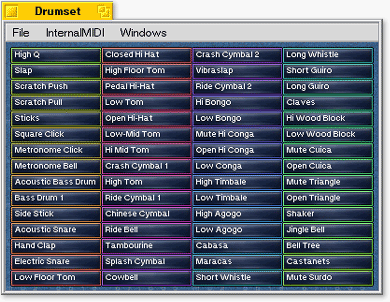

The Drumset Window The Drumset window shows all available instruments. If you think that they are a little bit unordered: That's how the General MIDI standard specified it!Click on one of the buttons: the sound is played. Drag the mouse while you press the mouse button: So you can drag the button. Then you can throw it onto the marked field on the Pattern window (see more on the next page)! You can modify the size of the Drumset window: Use either the zoom gadget or the (small) size gadget! | ||
| ||